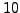
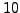

Occasionally, sigs or sig limits are shifted by
,  denoting the number of time series data points. Which sig threshold is the true one?
denoting the number of time series data points. Which sig threshold is the true one?
In fact both versions are correct, but they apply to different
questions. The version without
refers to the probability that
an amplitude level (a peak) at a given frequency and phase occurs by
chance. The version including
corresponds to the probability
that the highest out of independent peaks occurs by chance.
According to the sampling theorem, the DFT of  data points (a system
with
data points (a system
with  degrees of freedom) produces
independent frequencies in
Fourier space, if the sampling is equidistant. Although there is no
explicit prescription where to find a set of independent frequencies for
non-equidistant sampling, the system will still have
degrees of freedom) produces
independent frequencies in
Fourier space, if the sampling is equidistant. Although there is no
explicit prescription where to find a set of independent frequencies for
non-equidistant sampling, the system will still have  degrees of
freedom, and the statistical considerations will be essentially the same.
degrees of
freedom, and the statistical considerations will be essentially the same.
A simple experiment makes the situation clearer: we roll
a dice and obtain the result ``4''. The probability that that such an
experiment returns at least ``4'' is, of course,  %. This refers to the
examination of an individual peak without respect to all the others in
the spectrum. If we roll  dices, the probability for at least one
showing ``4'' or more is dramatically higher, namely
%. This refers to the
examination of an individual peak without respect to all the others in
the spectrum. If we roll  dices, the probability for at least one
showing ``4'' or more is dramatically higher, namely  %. This refers
to examining the highest out of peaks. The increasing probability of
obtaining such a result by chance corresponds to a decreasing
significance of the result.
%. This refers
to examining the highest out of peaks. The increasing probability of
obtaining such a result by chance corresponds to a decreasing
significance of the result.


Next: Keywords Reference
Up: Frequently Asked Questions
Previous: Linear interpolation: more information?
Contents
Piet Reegen
2009-09-23